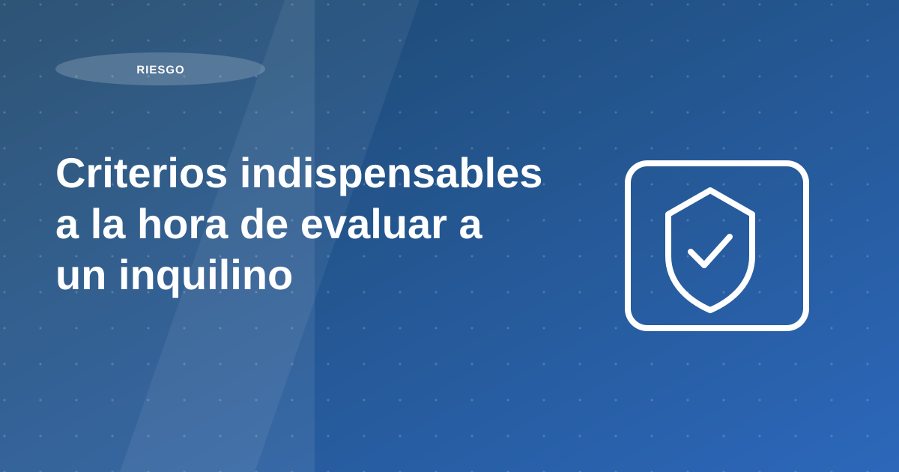

Criterios indispensables a la hora de evaluar a un inquilino

Elegir al inquilino correcto es la decisión que más impacta la rentabilidad y tranquilidad de tu alquiler. Esta guía resume los criterios que realmente reducen el riesgo: reglas claras, capacidad de pago verificable, historial, crédito, antecedentes y señales de alerta.
Autor: Proper Rentas · Fecha: 1 de abril de 2021 · Actualizado: 24 de enero de 2026
Tabla de contenidos
- Por qué es importante evaluar a un inquilino antes de alquilar
- 1) Requisitos básicos y reglas del inmueble
- 2) Capacidad financiera: cómo medirla
- 3) Ingresos verificables e historial laboral
- 4) Puntaje crediticio y deudas: cómo interpretarlo
- 5) Antecedentes policiales, judiciales y penales
- Señales de alerta frecuentes
- Checklist de evaluación (copiar y pegar)
- ¿Qué documentos debo pedir para evaluar a un inquilino en Perú?
Por qué es importante evaluar a un inquilino antes de alquilar
Un inquilino inadecuado puede generar morosidad, costos de reparación, pérdida de tiempo y trámites administrativos. La evaluación previa reduce esos riesgos y mejora la probabilidad de tener un alquiler estable y predecible.
Recomendación operativa: define un score mínimo de aprobación antes de iniciar negociación final. Ese estándar evita excepciones por apuro comercial y protege la estabilidad de los cobros.
1) Requisitos básicos y reglas del inmueble
Antes de hablar de dinero, define reglas claras. Si el candidato no se ajusta al marco de convivencia y uso, el riesgo de conflicto sube aunque “pague bien”.
Recomendación práctica: entrega estos requisitos por escrito y confirma aceptación antes de avanzar.
- Reglamento interno y convivencia: horarios, ruidos, mascotas, uso de áreas comunes.
- No subarriendo: deja explícito si está prohibido o bajo qué condiciones.
- Uso permitido: residencial, home office y restricciones de atención al público o uso comercial.
- Pagos adicionales: mantenimiento, arbitrios u otros conceptos que correspondan.
Recomendación operativa: estandariza el proceso previo a firma y documenta cada validación. El objetivo no es solo elegir rápido, sino elegir mejor y reducir incidentes posteriores.
2) Capacidad financiera: cómo medirla
La clave no es solo “cuánto gana”, sino si puede sostener el pago sin ahogarse . Una medida simple es la relación renta/ingreso.
Si el perfil es borderline (renta alta vs ingreso, o ingresos variables), considera pedir garante o reforzar sustentos.
- Regla práctica: la renta mensual debería estar entre 30% y 35% del ingreso mensual (idealmente neto).
- Deuda existente: tarjetas, préstamos, cuotas y obligaciones recurrentes afectan la capacidad real.
- Consistencia: ingresos variables o “picos” aislados aumentan riesgo si no hay respaldo.
Recomendación operativa: estandariza el proceso previo a firma y documenta cada validación. El objetivo no es solo elegir rápido, sino elegir mejor y reducir incidentes posteriores.
3) Ingresos verificables e historial laboral
Un buen candidato puede mostrar estabilidad: continuidad laboral, trayectoria y evidencia verificable. Como referencia, es deseable una continuidad de al menos 6 meses en el empleo o actividad actual.
Si hay antecedentes de desalojos, atrasos recurrentes, daños o conflictos, normalmente conviene pasar al siguiente candidato.
- Dependiente: boletas, contrato, constancia laboral, AFP/CTS si aplica.
- Independiente: sustentos de actividad, ingresos promedio de varios meses y consistencia de depósitos.
- Historial de alquiler: referencias y comportamiento (pagos, convivencia, cuidado del inmueble).
Recomendación operativa: estandariza el proceso previo a firma y documenta cada validación. El objetivo no es solo elegir rápido, sino elegir mejor y reducir incidentes posteriores.
4) Puntaje crediticio y deudas: cómo interpretarlo
Un puntaje bajo no siempre significa “mal inquilino”. Interesa entender el patrón : recencia de atrasos, monto, frecuencia y si hoy existe estabilidad.
- Qué sí pesa: atrasos recientes, mora repetitiva, sobreendeudamiento.
- Qué contextualizar: incidentes antiguos y aislados con situación actual sólida.
- Complementa: referencias verificables y consistencia documental.
Recomendación operativa: estandariza el proceso previo a firma y documenta cada validación. El objetivo no es solo elegir rápido, sino elegir mejor y reducir incidentes posteriores.
5) Antecedentes policiales, judiciales y penales
No todos los antecedentes tienen el mismo peso. Si existe historial, revisa la naturaleza del caso , su antigüedad y si hay señales de riesgo actual para el inmueble o la convivencia.
Las infracciones no violentas de hace varios años pueden no tener relevancia directa sobre la capacidad de pago, pero siempre evalúa el contexto y tu nivel de tolerancia al riesgo.
Recomendación operativa: estandariza el proceso previo a firma y documenta cada validación. El objetivo no es solo elegir rápido, sino elegir mejor y reducir incidentes posteriores.
Señales de alerta frecuentes
- Inconsistencias entre lo declarado y lo documentado (ingresos, empleo, domicilio).
- Negativa a sustentar ingresos o a dar referencias verificables.
- Presión por entrar “rápido” sin contrato, sin inventario o sin reglas claras.
- Historial de cambios constantes de vivienda sin explicación coherente.
- Conflictos previos con vecinos/administración reportados por referencias.
Recomendación operativa: estandariza el proceso previo a firma y documenta cada validación. El objetivo no es solo elegir rápido, sino elegir mejor y reducir incidentes posteriores.
Checklist de evaluación (copiar y pegar)
- Identidad: DNI / Carné de extranjería (vigente) y verificación de datos.
- Reglas del inmueble: aceptación por escrito (uso, convivencia, subarriendo, pagos adicionales).
- Capacidad de pago: renta ≤ 30%–35% del ingreso (ideal neto) + revisión de deudas.
- Ingresos: sustentos consistentes (dependiente/independiente) y continuidad.
- Historial de alquiler: referencias y evidencia de pagos/comportamiento si aplica.
- Crédito: patrón de pago, recencia de atrasos, sobreendeudamiento.
Recomendación operativa: estandariza el proceso previo a firma y documenta cada validación. El objetivo no es solo elegir rápido, sino elegir mejor y reducir incidentes posteriores.
¿Qué documentos debo pedir para evaluar a un inquilino en Perú?
Como base: documento de identidad, sustento de ingresos, reporte crediticio, referencias y, según el caso, documentación adicional (actividad independiente o garante).
Recomendación operativa: define un score mínimo de aprobación antes de iniciar negociación final. Ese estándar evita excepciones por apuro comercial y protege la estabilidad de los cobros.
Plan de acción recomendado para propietarios
Un buen plan de mitigación de riesgo empieza antes de publicar el inmueble. Primero, define requisitos mínimos de evaluación: capacidad de pago, trazabilidad de ingresos, coherencia documental y antecedentes. Luego, asigna pesos a cada criterio para evitar decisiones por intuición.
En la segunda etapa, estandariza entrevistas, revisión documental y validación de referencias. El objetivo no es solo aprobar o rechazar perfiles, sino crear evidencia suficiente para sustentar la decisión. Cuando el proceso está documentado, se reduce la probabilidad de excepciones mal justificadas.
La tercera etapa es contractual y de seguimiento: reglas de pago claras, penalidades transparentes y protocolo de alertas tempranas. Con esto, el riesgo se gestiona como proceso continuo y no como reacción tardía frente a problemas ya avanzados.
- Definir score mínimo de aprobación.
- Validar consistencia entre ingresos y estilo de vida.
- Documentar evaluación y decisión final.
- Activar alertas de cobranza desde el primer mes.
Errores frecuentes y cómo evitarlos
El principal error es acelerar cierre sin completar validaciones críticas. Una aprobación apresurada puede parecer eficiente en el corto plazo, pero termina elevando morosidad, fricción legal y desgaste operativo.
Otro error es depender exclusivamente de garantías adicionales. Las garantías ayudan, pero no sustituyen un filtro sólido del perfil de pago ni un contrato operativo bien estructurado.
Indicadores para medir resultados mes a mes
Mide tasa de aprobación por fuente, porcentaje de atraso por cohorte de ingreso y tiempo medio de regularización. Estos indicadores permiten identificar dónde se origina el riesgo y qué parte del proceso debe fortalecerse.
Complementa con un indicador de incidencias contractuales por trimestre. Si sube ese valor, normalmente hay desalineación entre evaluación inicial, expectativas del inquilino y términos de administración.
Preguntas frecuentes
¿Cuál es la señal de riesgo más útil antes de firmar?
La consistencia entre ingresos, historial de pago y documentación. Las incoherencias tempranas son alertas clave.
¿Cómo se reduce morosidad sin frenar cierres?
Con filtros objetivos previos, contrato claro y seguimiento desde el primer mes.
¿Sirve pedir más garantías en lugar de evaluar mejor?
No reemplaza una buena evaluación. Las garantías ayudan, pero el filtro inicial sigue siendo el principal control de riesgo.
Conclusión
Al revisar criterios indispensables a la hora de evaluar a un inquilino, la conclusión principal es que la rentabilidad no depende de una sola decisión, sino de la calidad del proceso completo: análisis previo, ejecución comercial, filtro, contrato y administración mensual.
Si priorizas estandarización, medición y mejora continua, reduces vacancia, controlas riesgo y sostienes mejores resultados para tu propiedad en el tiempo.